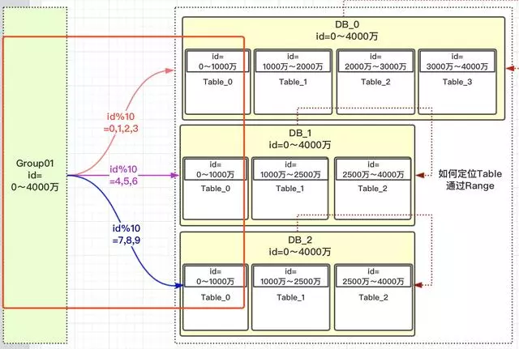

1.概念
https://mp.weixin.qq.com/s/YNYtD-yItbH7u5KqC8Z-Pg
①数据库设计
- 数据库系统：数据库系统是应用系统存储数据的关键组成部分，是系统稳定运行的基础，决定着系统是否可以高效稳定地运行。
- 数据库设计：数据库设计就是根据业务系统的具体需要，结合我们所选用的 DBMS（数据库管理系统），为这个业务系统构造出最优的数据存储模型。并建立好数据库中的表结构及表与表之间的关联关系的过程。
- 常用的关系型数据库系统：MySQL、Oracle、SQLServer、PgSql。
- 常用的 NoSQL 系统：MongoDB、Redis、Memcache。
- 数据库设计的最终结果：利用所选择的数据库管理系统，有效地对应用系统中的产生的数据进行存储，并且可以对已经存储的数据进行高效的访问。
②你的数据库是怎么设计的？
a.需求分析
- 为什么要进行需求分析？
- 了解系统中所要存储的数据
- 了解数据的存储特点
- 了解数据的生命周期
- 需要分析哪些内容？
- 数据是什么？
- 数据有哪些属性？
- 数据和属性各自的特点有哪些？
- 对于时效性数据：采取过期清理或归档的方式进行存储。
- 对于数据量增长很快的非核心数据：采取分库分表的方式进行存储（如日志数据增长很快且非核心数据，不适合存储在数据库中。如果要存储在数据库中，需要分库分表、按时清理或归档。）
b.逻辑设计
- 逻辑设计是做什么的？
- 将需求转化为数据库的逻辑模型
- 通过 ER 图的形式对逻辑模型进行展示
- 同所选用的具体的 DBMS 系统无关
- 要搞清楚的一些问题
- 在数据库中存储的实体（即对象）有哪些？
- 实体之间的关系、实体与数据库表的关系（1 对 1、1 对多或多对多）
- 实体所包含的属性有什么？
- 哪些属性或属性的组合可以唯一标识一个实体
c.物理设计
- 具体见 2.物理设计
d.维护优化
- 具体见 3.维护优化
注意：有新需求时，同样需要经过以上步骤修改表结构。
③为什么要进行数据库的设计？
| 优良的设计 | 糟糕的设计 |
|---|---|
| 减少数据冗余 | 存在大量数据冗余 |
| 避免数据维护异常 | 存在数据插入、更新、删除异常 |
| 节约存储空间 | 浪费大量存储空间 |
| 高效的访问 | 访问数据低效 |
④如何选择合适的数据存储方案 ？
| 数据库 | 类型 | 实现语言 | 优点 | 缺点 | 应用场景 |
|---|---|---|---|---|---|
| MySQL | 关系型数据库 | C、C++ | 开源、跨平台、功能强大且使用方便 | ①最大的缺点是其安全系统，主要是复杂而非标准，只有调用 mysqladmin 来重读用户权限才会发生改变。②不允许调试存储过程，开发和维护存储过程很难。③不支持热备份。④价格随平台和安装方式变化。⑤在海量数据处理的时候效率会显著变慢 | Web 网站系统、日志记录系统、数据仓库系统、嵌入式系统 |
| Redis | 非关系型数据库 | C | 支持多种数据结构、支持持久化操作、支持 pub/sub 消息订阅机制 | 单线程、只支持简单的事务需求、在 String 类型上会消耗较多内存 | 缓存、会话缓存、时效性、访问频率、计数器、社交列表、记录用户判定信息、热门列表与排行榜、最新动态等 |
| MongoDB | 文档型数据库 | C++ | 更高的写负载、处理很大规模的单表、高可用性、快速的查询 | 不支持事务、占用空间过大、没有成熟的维护工具 | 主要解决海量数据的访问效率问题 |
⑤数据库的架构
⑥数据库的三大范式
- 第一范式：每个列都不可以再拆分
- 第二范式：在第一范式的基础上，非主键列完全依赖于主键，而不能是依赖于主键的一部分。
- 第三范式： 在第二范式的基础上，非主键列只依赖于主键，不依赖于其他非主键。
- 什么是范式：构造数据库必须遵循一定的规则，在关系数据库中，这种规则就是范式。
- 范式作用：如果是符合数据库范式的设计，则是简洁高效、结构清晰的数据库设计，同时可以避免数据库的插入、更新和删除异常，并且最大限度地避免数据冗余。
- 插入异常：应该插入的数据未被插入
- 更新异常：更新一条记录时需要更新其他多条记录
- 删除异常：不该删除的数据被删除
- 数据冗余：每条记录都含有相同信息
- 如果一个表存在插入异常，则必定会存在更新异常和删除异常。
- 符合范式的好处：
- 减少数据冗余
- 消除异常（插入异常，更新异常，删除异常）
- 让数据组织的更加和谐
- 注意：三大范式只是一般设计数据库的基本理念，可以建立冗余较小、结构合理的数据库。如果有特殊情况，当然要特殊对待，数据库设计最重要的是看需求跟性能，需求 > 性能 > 表结构。所以不能一味的去追求范式建立数据库。
⑦反范式化表设计
- 概念：反范式化是针对范式化而言的，它为了性能和读取效率的考虑而适当的对第三范式的要求进行违反，而允许存在少量的数据冗余。反范式化就是使用空间来换取时间。
- 优点：减少表的关联数量，意味着减少了磁盘的 IO 操作，增加了数据的读取效率。
- 缺点：增加了数据冗余、对数据的修改需要更多的成本
- 注意：一定要适度（在可控范围内）。
2.物理设计
①概念
- 根据数据库自身的特点把逻辑设计转换为物理设计，物理设计是整个数据库设计中最核心的部分。
- 要做的工作：建立起数据库的表结构
- 选择合适的数据库管理系统（MySQL、Oracle 等）：从应用特点和成本方面进行考虑。
- 定义数据库、表及字段的命名规范（以便通过字段名和表名看出字段或表的作用）：不同的数据库管理系统中对数据库表及字段名的长度限制不同
- 根据所选的数据库管理系统选择合适的字段类型，然后依据命名规范及逻辑模型进行建库建表操作。
- 出于效率的考虑，对于已经设计好的符合规范的逻辑模型进行一些反范式化设计（如增加一些数据冗余，以空间换时间。）
②表及字段的命名规则
③字段类型的选择原则
④其它注意事项
3.维护优化
①如何维护数据字典
②如何维护索引
③如何维护表结构
④数据库中适合的操作
- 数据库适合批量操作，逐条操作适合在应用程序中完成。
- 禁止使用 SELECT * 这样的查询，查询出大量不使用的字段，会造成 IO 的浪费。
- 大量使用用户自定义函数可能会对索引的使用造成影响。如果使用函数，则列中的索引就会不起作用。
- 全文索引需要另外建立索引文件来对索引进行维护，且对中文的支持不好。最好使用专业的搜索引擎工具来代替全文索引。
4.主键
①为什么要尽量设定一个主键?
- 主键是数据库确保数据行在整张表唯一性的保障。即使业务上本张表没有主键，也建议添加一个自增长的 ID 列作为主键。设定了主键之后，在后续的删改查的时候可能更加快速并且确保操作数据范围安全。
②主键使用自增 ID 还是 UUID?
- 推荐使用自增 ID，不要使用 UUID。
- 因为在 InnoDB 存储引擎中，主键索引是作为聚簇索引存在的。也就是说，主键索引的 B+ 树叶子节点上存储了主键索引以及全部的数据（按照顺序），如果主键索引是自增 ID ，那么只需要不断向后排列即可，如果是 UUID，由于到来的 ID 与原来的大小不确定，会造成非常多的数据插入、数据移动，导致产生很多的内存碎片，进而造成插入性能的下降。
- 总之，在数据量大的情况下，用自增主键性能会好一些。
注意：如果没有主键，InnoDB 会选择一个唯一键来作为聚簇索引。如果没有唯一键，则会生成一个隐式的主键。
③分布式 ID
- 问：什么是分布式 ID？
- 答：分库分表后需要有一个唯一 ID 来标识一条数据， 这个全局唯一 ID 就叫分布式 ID。
- 问：分布式 ID 需要满足那些条件？
- 全局唯一：确保生成的 ID 是全局唯一的。
- 高性能：高可用低延时，ID 生成响应要块，否则反倒会成为业务瓶颈。
- 高可用：确保任何时候都能正确的生成 ID。
- 好接入：要秉着拿来即用的设计原则，在系统设计和实现上要尽可能的简单。
- 趋势递增：最好趋势递增，这个要求就得看具体业务场景了，一般不严格要求。
- 问：订单如何唯一标识？/ MySQL 全局唯一 ID 生成方案？/ 如何选择合适的分布式 ID 的设计方案？/ 常见的几种分布式 ID 的设计方案？
- 答：见下文
a.UUID
- 用法：
String uuid = UUID.randomUUID().toString().replaceAll("-", "");，它有着全球唯一的特性。UUID 的生成简单到只有一行代码，输出结果 c2b8c2b9e46c47e3b30dca3b0d447718，但它却并不适用于实际的业务需求。像用作订单号 UUID 这样的字符串没有丝毫的意义，看不出和订单相关的有用信息；而对于数据库来说用作业务主键 ID，它不仅长还是字符串，存储性能差查询也很耗时，所以不推荐用作分布式 ID。 - 优点：代码实现简单，本地生成无网络消耗，具有唯一性。
- 缺点：
- 每次生成的 ID 是无序的，不具备趋势自增的特性。
- 没有具体的业务含义
- UUID 的字符串存储，存储空间大，查询效率低。存储以及查询对 MySQL 的性能消耗较大，MySQL 官方明确建议主键要尽量越短越好，作为数据库主键 UUID 的无序性会导致数据位置频繁变动，严重影响性能。
- 应用场景：类似生成 token 令牌的场景、不适用一些要求有趋势递增的 ID 场景。
b.MySQL 主键自增
- 用法：基于数据库的 auto_increment 自增 ID 完全可以充当分布式 ID，具体实现：需要一个单独的 MySQL 实例用来生成 ID，当我们需要一个 ID 的时候，向表中插入一条记录返回主键 ID。但这种方式有一个比较致命的缺点，访问量激增时 MySQL 本身就是系统的瓶颈，用它来实现分布式服务风险比较大，不推荐！
- 优点：实现简单，ID 单调自增，数值类型且效率高。
- 缺点：DB 单点存在宕机风险，无法扛住高并发场景。
c.MySQL 多实例主键自增
- 用法：对单点数据库方式做一些高可用优化，换成主从模式集群。害怕一个主节点挂掉没法用，那就做多主模式集群，也就是多个MySQL 实例都能单独的生产自增 ID。通过设置起始值和自增步长来避免多个 MySQL 实例生成重复 ID。
- 优点：解决了数据库单点问题
- 缺点：不利于后续扩容，实际上单个数据库自身压力还是大，依旧无法满足高并发场景。
- 应用场景：数据不需要扩容的场景
d.基于数据库的号段模式
- 用法：号段模式是当下分布式 ID 生成器的主流实现方式之一，号段模式可以理解为从数据库批量的获取自增 ID，每次从数据库取出一个号段范围，例如 (1,1000] 代表 1000 个 ID，具体的业务服务将本号段生成 1~1000 的自增 ID 并加载到内存。等这批号段 ID 用完，再次向数据库申请新号段。由于多业务端可能同时操作，所以采用版本号 version 乐观锁方式更新，这种分布式 ID 的生成方式不强依赖于数据库，不会频繁的访问数据库，对数据库的压力小很多。
- 优点：避免了每次生成 ID 都要访问数据库并带来压力，提高性能。
- 缺点：属于本地生成策略，存在单点故障，服务重启会造成 ID 不连续。
e.Redis 生成方案
- 用法：利用 Redis 的 incr 命令实现 ID 的原子性自增，一般算法为：年份 + 当天距当年第多少天 + 天数 + 小时 + Redis 自增。
- 优点：
- 不依赖于数据库，灵活方便，且性能优于数据库。
- 有序递增，可读性强。
- 缺点：
- 占用带宽，每次要向 Redis 进行请求。
- 复杂性太高，需要严重依赖第三方服务，而且代码配置繁琐。
f.雪花 snowflake 算法
- 用法：它给每台机器分配一个唯一标识，然后通过时间戳 + 标识 + 自增实现全局唯一 ID。根据这个算法的逻辑，只需要将这个算法用 Java 语言实现出来，封装为一个工具方法，那么各个业务应用可以直接使用该工具方法来获取分布式 ID，只需保证每个业务应用有自己的工作机器 ID 即可，而不需要单独去搭建一个获取分布式 ID 的应用。
- 优点：
- 此方案每秒能够产生 409.6 万个 ID，速度快。
- 时间戳在高位，自增序列在低位，整个 ID 是趋势递增的，按照时间有序递增。
- 灵活度高，可以根据业务需求，调整 bit 位的划分，满足不同的需求。
- 缺点：依赖机器的时钟，如果服务器时钟回拨，会导致重复 ID 生成。
g.百度 UidGenerator
https://zhuanlan.zhihu.com/p/107939861
https://juejin.im/post/6844903631137800200
https://mp.weixin.qq.com/s/HRJb8iBsXJTdsUhfhOxHlw
h.美团 Leaf
i.滴滴 Tinyid
5.分库分表
①数据库瓶颈
a.IO 瓶颈
- 磁盘读 IO 瓶颈：热点数据太多，数据库缓存放不下，每次查询时会产生大量的 IO，降低查询速度 —> 分库和垂直分表。
- 网络 IO 瓶颈：请求的数据太多，网络带宽不够 —> 分库。
b.CPU 瓶颈
- SQL 问题：如 SQL 中包含 JOIN，GROUP BY，ORDER BY，非索引字段条件查询等，增加 CPU 运算的操作 —> SQL 优化，建立合适的索引，在业务 Service 层进行业务计算。
- 单表数据量太大，查询时扫描的行太多，SQL 效率低，CPU 率先出现瓶颈 —> 水平分表。
②水平分库（拆分表中记录）

- 概念：以字段为依据，按照一定策略（hash、range 等），将一个库中的数据拆分到多个库中。
- 结果：
- 每个库的结构都一样
- 每个库的数据都不一样，没有交集。
- 所有库的并集是全量数据
- 应用场景：系统绝对并发量上来了，分表难以从根本上解决问题，并且还没有明显的业务归属来垂直分库。
- 分析：库多了，IO 和 CPU 的压力自然可以成倍缓解。
③水平分表（拆分表中记录）
注意：MySQL 单表存储量推荐是百万级。

- 概念：以字段为依据，按照一定策略（hash、range 等），将一个表中的数据拆分到多个表中。
- 结果：
- 每个表的结构都一样
- 每个表的数据都不一样，没有交集。
- 所有表的并集是全量数据
- 应用场景：系统绝对并发量并没有上来，只是单表的数据量太多，影响了 SQL 效率，加重了 CPU 负担，以至于成为瓶颈。
- 分析：表的数据量少了，单次 SQL 执行效率高，自然减轻了 CPU 的负担。
④垂直分库（拆分表）
- 概念：以表为依据，按照业务归属不同，将不同的表拆分到不同的库中。
- 结果：
- 每个库的结构都不一样；
- 每个库的数据也不一样，没有交集；
- 所有库的并集是全量数据；
- 应用场景：系统绝对并发量上来了，并且可以抽象出单独的业务模块。
- 分析：到这一步，基本上就可以服务化了。例如：随着业务的发展一些公用的配置表、字典表等越来越多，这时可以将这些表拆到单独的库中，甚至可以服务化。再有，随着业务的发展孵化出了一套业务模式，这时可以将相关的表拆到单独的库中，甚至可以服务化。
⑤垂直分表（拆分列）
- 概念：以字段为依据，按照字段的活跃性，将表中字段拆到不同的表（主表和扩展表）中。
- 结果：
- 每个表的结构都不一样
- 每个表的数据也不一样，一般来说，每个表的字段至少有一列交集，一般是主键，用于关联数据。
- 所有表的并集是全量数据
- 应用场景：系统绝对并发量并没有上来，表的记录并不多，但是字段多，并且热点数据和非热点数据在一起，单行数据所需的存储空间较大。以至于数据库缓存的数据行减少，查询时会去读磁盘数据产生大量的随机读 IO，产生 IO 瓶颈。
- 分析：可以用列表页和详情页来帮助理解。垂直分表的拆分原则是将热点数据（经常一起查询的数据）放在一起作为主表，非热点数据放在一起作为扩展表。这样更多的热点数据就能被缓存下来，进而减少了随机读 IO。拆了之后，要想获得全部数据就需要关联两个表来取数据。但记住，千万别用 JOIN，因为 JOIN 不仅会增加 CPU 负担并且会将两个表耦合在一起（必须在一个数据库实例上）。关联数据，应该在业务 Service 层做文章，分别获取主表和扩展表数据然后用关联字段关联得到全部数据。
⑥分库分表步骤
- 根据容量（当前容量和增长量）评估分库或分表个数
- 选 key（均匀）
- 分表规则（hash 或 range 等）
- 执行（一般双写）
- 扩容问题（尽量减少数据的移动）
⑦分库分表方案
a.hash 取模方案
- 概念：hash 的方案就是对指定的路由key（如：id）对分表总数进行取模。
- 具体做法：上图中，id = 12 的订单，对 4 进行取模会得到 0，那此订单会放到 0 表中。id = 13 的订单，取模会得到 1，那此订单会放到 1 表中。为什么对 4 取模，是因为分表总数是4。
- 优点：没有热点问题
- 缺点：扩容迁移数据痛苦（增加分表数后需要重新划分数据）
热点的含义：热点的意思就是对订单进行操作集中到 1 个表中，其他表的操作很少。
订单有个特点就是时间属性，一般用户操作订单数据，都会集中到这段时间产生的订单。如果这段时间产生的订单都在同一张订单表中，那就会形成热点，那张表的压力会比较大。
b.range 范围方案
- 概念：以范围进行拆分数据。
- 具体做法：上图中，id = 12 放到 0 表中，id = 1300 万放到 1 表中。设计这个方案时需要前期把表的范围设计好，之后通过 ID 进行路由存放。
- 优点：不需要迁移数据，利于扩容。
- 缺点：有热点问题（某段时间产生的订单会集中到某表中，会导致某表过热，压力过大，而其他表没有什么压力。）
c.总结
hash 可以解决数据均匀问题，range 可以解决数据迁移问题，我们可以将两者结合起来。

⑧分库分表后面临的问题
a.事务问题
- 解决事务问题目前有两种可行的方案：分布式事务和通过应用程序与数据库共同控制实现事务。
- 方案一：使用分布式事务
- 优点：交由数据库管理，简单有效。
- 缺点： 性能代价高，特别是 shard 越来越多时。
- 方案二：由应用程序和数据库共同控制
- 原理：将一个跨多个数据库的分布式事务分拆成多个仅处于单个数据库上面的小事务，并通过应用程序来总控各个小事务。
- 优点：性能上有优势
- 缺点： 需要应用程序在事务控制上做灵活设计。如果使用 了 Spring 的事务管理，改动起来会面临一定的困难。
b.跨节点 JOIN
- 只要是进行切分，跨节点 JOIN 的问题是不可避免的。但是良好的设计和切分却可以减少此类情况的发生。
- 解决方案：普遍做法是分两次查询实现。在第一次查询的结果集中找出关联数据的 ID，根据这些 ID 发起第二次请求得到关联数据。
c.跨节点的 COUNT、ORDER BY、GROUP BY 以及聚合函数等问题
- 这些是一类问题，因为它们都需要基于全部数据集合进行计算。多数的代理都不会自动处理合并工作。
- 解决方案：与解决跨节点 JOIN 问题类似，分别在各个节点上得到结果后在应用程序端进行合并。
- 优点：和跨节点 JOIN 不同的是每个结点的查询可以并行执行，因此很多时候它的速度要比单一表快很多。
- 缺点：如果结果集很大，对应用程序内存的消耗是一个问题。
d.数据迁移，容量规划，扩容等问题
- 来自淘宝综合业务平台团队，它利用对 2 的倍数取余具有向前兼容的特性（如对 4 取余得 1 的数对 2 取余也是 1）来分配数据，避免了行级别的数据迁移，但是依然需要进行表级别的迁移，同时对扩容规模和分表数量都有限制。总得来说，这些方案都不是十分的理想，多多少少都存在一些缺点，这也从一个侧面反映出了 Sharding 扩容的难度。
e.ID 问题
- 具体见 4.主键 — ③分布式 ID
附录
- 我的个人博客：messi1002.top
- 如有错误或疑惑之处 请联系 wjymessi@163.com